Write a nice intro to this topic
...or something.
Pretty obvious we write some history.
|
Comparing two images that need to be brought into the same spatial coordinates. The process of mapping spatial coordinates of one image onto another. |
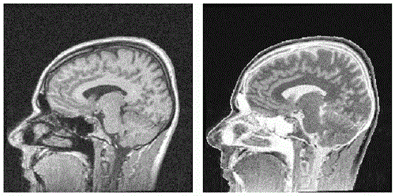 |
| 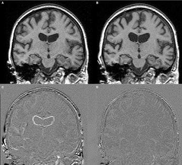 |
Two types of registration. - Rigid registration : Image translated, rotated or scaled. - Non-rigid registration (Elastic) : Local-level deformation. E.g Regression or growth of disease. |
Rigid RegistrationIntensity Based Rigid Registration - Iteratively optimises 6 rigid-body parameters describing the orientation of the 3D data-set using a similarity measure. Landmark Based Registration - Selection of landmarks/feature points and matching them on the images helps to correctly register them. Hybrid Registration - Tries to incorporate the the benefits of both landmark based registration and intensity based rigid registration. |
Non-Rigid Registration |
Must use features in the image that are invariant to translation and rotation. These feature points can then register the images using a method called landmark based registration method. Average 4-Step Method: 1. Feature Detection 2. Feature Matching 3. Transform Model Estimation 4. Image Re-Sampling and Transformation |
| 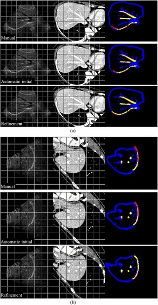 |
Feature DetectionDistinctive objects are manually or more preferably automatically detected in the images and can be represented by their point representatives. These points are called control points. |
Feature DetectionIn the past objects were manually selected by an expert. Two main approaches to automate this task. Area-Based Methods - More emphasis on the feature matching step than on their detection. First step essentially omitted. Feature-Based Methods - Significant regions, lines or points are understood as features here. |
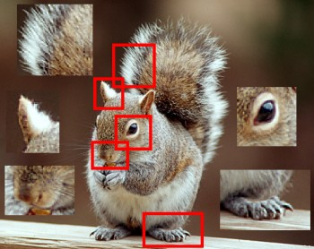 |
Feature Based MethodsFeatures should be spread all over the image and be efficiently detectable in both images. Expected to be stable and stay at fixed positions. Comparability of feature sets is assured by the feature detector. The number of common elements in the detected sets of features should be sufficiently high. Feature-Based Methods do not work directly with image intensity values but represent information on a higher level. This makes the method suitable for different kinds of imaging such as medical imaging. |
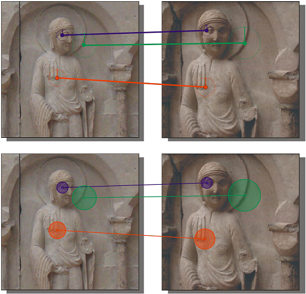 |
| 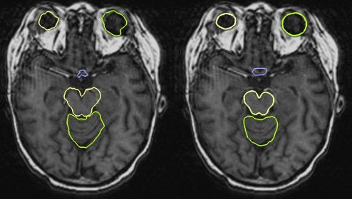 |
Types of FeaturesRegion Features : High contrast closed-boundary regions of an appropriate size. Line Features : Representations of general line segments. (Elongated anatomic structures in MI) Point Features : The most distinctive points with respect to a specified measure of similarity. |
Types of FeaturesRegion Features detected by means of segmentation methods. Dependent on the accuracy of the segmentation method. Sub-pixel accuracy or registration can be achieved with iterative methods. Line Features expressed by pairs of line ends or middle points. Line detection can be done by standard edge detection methods like Canny detector or a detector based on the Laplacian of Gaussian. |
| 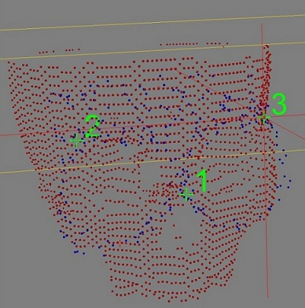 |
Types of FeaturesPoint Features detected in most cases by following the definition of a point as a line intersection, centroid of closed-boundary region or local maxima of the wavelet transform. Defining corners is hard. Corner detection methods include SUSAN detector. Point Features include corners. Some registration techniques are using both area and feature based approaches. |
Feature MatchingMatched by means of image intensity values in their close neighbourhoods, the feature spatial distribution, or the feature symbolic description. |
|
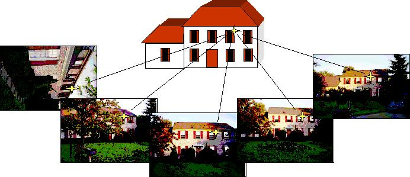 |
|
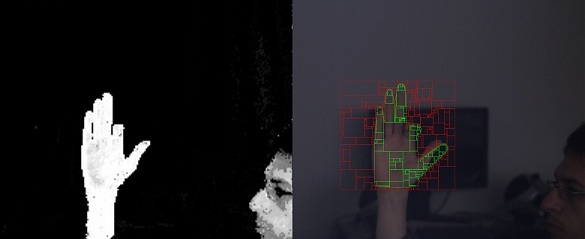 |
Feature MatchingArea-Based Methods - Suits the registration of images which locally differ only by a translation. Any images deformed by more complex transformations will not register properly. Another disadvantage is that there is a high chance that any two non-detailed areas will be matched incorrectly. |
Feature MatchingCorrelation-Like Methods - Classic area-based methods including cross-correlation try to matching image intensities without structural analysis. This makes it very sensitive to intensity changes such as noise. |
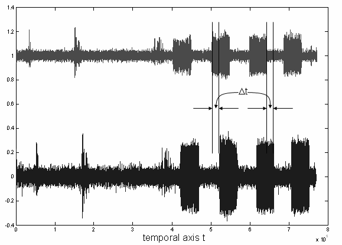 |
|
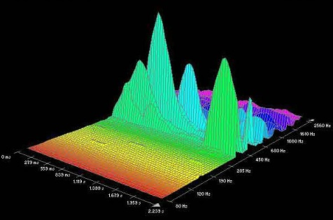 |
Feature MatchingFourier Methods - Preferred when there is varying conditions (varying light intensity) or the images are corrupted with noise. Phase correlation method is based on the Fourier Shift Theorem. This computes the cross-power spectrum of the images and looks for the location of the peak in its inverse. This method has robustness against noise and illumination levels. Time savings are more significant as the image size increases. In case of varying image scales, combine polar-log mapping and phase correlation. |
Feature Matching |
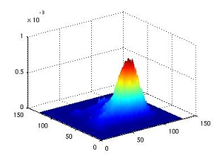 |
| 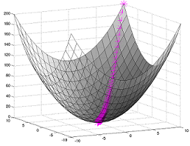 |
Originates in information theory, measures statistical dependency between two data sets and is particularly suitable for different modalities. This method is based upon the maximum of MI. Can be sped up by using the coarse-to-fine resolution strategy (the pyramidal approach). Can be used to match MRI images and 3D object model matching to the real scene. Gradient Descent Optimisation. |
|
With the increased use of robotic assisted, minimally invasive, surgery this has become the ideal environdment for such things as Augmented Reality. Traditional AR methods, however, such as overlaid AR, have suffered from a lack of depth perception. Even when the objects in question are rendered at the correct depth, the brain perceives the virtual images to be floating, thus hampering the process. |
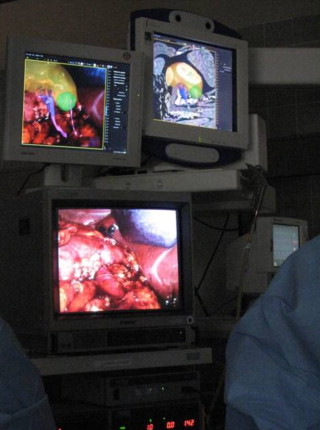 |
|
To perceive the image as embedded the brain expects some form of occlusion/obstruction. As such AR allowed the surgeon to view the medical imagery from a natural viewpoint Positives; ~ The effectiveness and clinical benefit of AR has been widely recognised |
|
Negatives; ~ The application of the technique to cardiothoracic or gastrointestinal surgery remains limited ~ Tissue deformation can present significant challenge to AR displays |
| Techniques such as P-Q Space Rendering provide see-through vision of embedded virtual objects. These maintain the projected anatomical detail of the eposed surface whilst aiding the surgery. |
|
The idea of P-Q Space Rendering is to render the exposed surface as a translucent layer whilst ensuring that sufficient detail remains to aid both navigation and depth cue-ing. The surface geometry is based on p-q space representation. 'p' and 'q' represent the slope of the surface along the x and y axes, respectively. |
| During broncoscopic and endoscopic procedures, P-Q Space is used heavily alongside the Shape from Shading Algorithm. This is a classical problem within the field of computer vision. It addresses the issue of extracting both surface and relative depth information from a single image. | |
|
Below is an example of shape from shading used to pull the depth information of the left image. The results have been mathematically protrayed as a graph. |
|
| 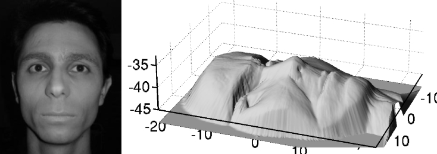 | |
| image curtosy of; http://hal.inria.fr/inria-00394230/en/ | |
| 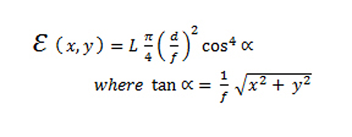 |
|
E(x,y) represents the image irradiance, the amount of light falling on a surface L is reflected radiance of the light-source, the amount of light radiated from a surface d is the lens diametre f is the focal length α is the angle between the optical axis and the light ray going through the centre of the observed angle |
| Given the previous equation, α is assumed negliable. However when using endoscopes this cannot be assumed as the camera and light source are assumed to be near the surface. As such, the image irradiance in this situation can be described by a constant of the camera parametres, multipled by the surface albedo, the angle between the incident ray and surface normal and a monotomically decreasing function of the surface point and light source. | |
|
When using p-q space rendering the surfaces normals for each pixel are extracted (using linear local shape-from-shading algorithms derived from the necessary camera and lighting constraints). Given a 3D tomographic model, the p-q components are then extracted. |
| In P-Q Space representation, the angle between the normal vectors both before and after rigid body registration will remain the same for every surface point. This means that local deformation is identified where the angle diverts from the overall mean of the 3D model. |
For testing.
For testing.